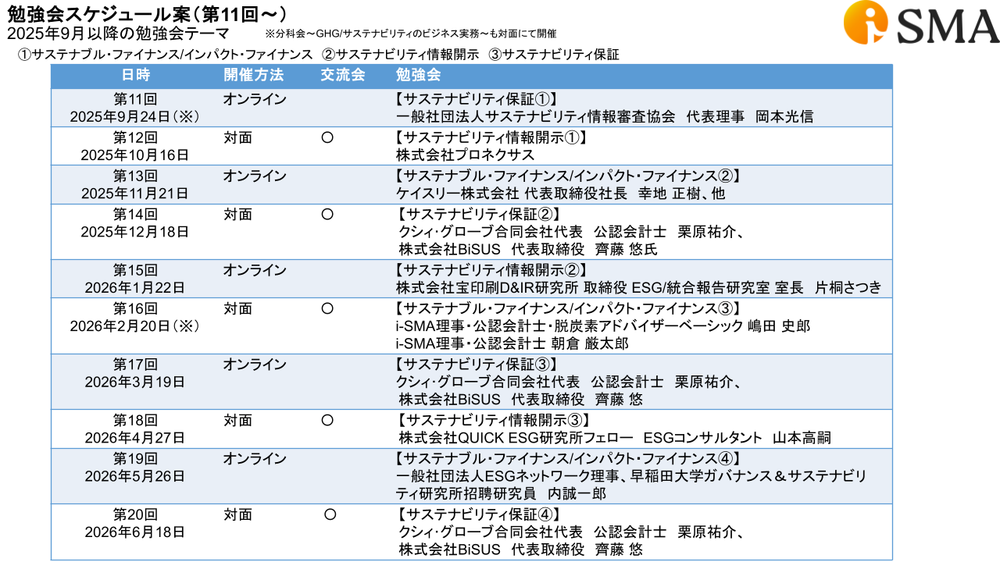
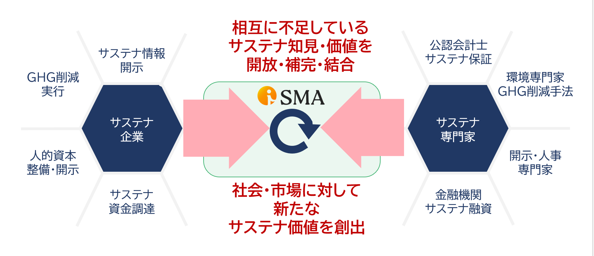

Institute of Sustainability Management and Assurance
一般社団法人 サステナビリティマネジメント＆アシュアランス機構
次世代に良い価値を渡していく
次世代に良い価値を渡していく
一般社団法人サステナビリティマネジメント＆アシュアランス機構（i-SMA）は、サステナビリティに関する知識の普及・促進を目的として設立された団体です。
財務・会計とサステナビリティの両面に精通した専門家を育成し、企業が持続可能な経営・資金調達・開示・保証に取り組めるよう支援しています。
2024年4月22日（地球の日）に設立。東京・恵比寿を拠点に活動しています。
社団概要についてWhat We Do
サステナビリティ分野の専門家・企業をつなぎ、知識共有と協働を促進します。
定期的な勉強会・交流会を通じて、実務に役立つ知識の習得をサポートします。
TCFD/TNFD、SSBJ、EU CSRD/ESRSなどの開示・保証対応を支援します。
企業のニーズに合わせた専門家・コンサルタントをマッチングします。
Activities
毎月・隔月で開催する勉強会と交流会。オンライン・対面・ハイブリッドの形式で行い、サステナビリティに関する体系的な学習の場を提供します。

企業のサステナビリティ課題に応じた専門家・コンサルタントを紹介します。

Board Members
読み込み中...
Member & Partner Companies